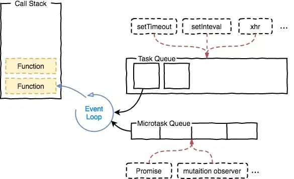

问题： 最近用vuelayers，需要在map初始化完成的回调方法中设置map的中心点，发现用$nextTick无法设置，但是setTimeout可以，这是为什么呢
1. 定义：
$nextTick:
在下次 DOM 更新循环结束之后执行延迟回调。在修改数据之后立即使用这个方法，获取更新后的 DOM。Vue文档中提到：
Vue 异步执行 DOM 更新。只要观察到数据变化，Vue 将开启一个队列，并缓冲在同一事件循环中发生的所有数据改变。…………例如，当你设置 vm.someData = ‘new value’ ，该组件不会立即重新渲染。当刷新队列时，组件会在事件循环队列清空时的下一个“tick”更新。多数情况我们不需要关心这个过程，但是如果你想在 DOM 状态更新后做点什么，这就可能会有些棘手。虽然 Vue.js 通常鼓励开发人员沿着“数据驱动”的方式思考，避免直接接触 DOM，但是有时我们确实要这么做。为了在数据变化之后等待 Vue 完成更新 DOM ，可以在数据变化之后立即使用 Vue.nextTick(callback) 。这样回调函数在 DOM 更新完成后就会调用。
setTimeout:
用于设置一个定时器，该定时器在定时器到期后执行一个函数或指定的一段代码。
2. 执行顺序
要知道$nextTick/setTimeout/Promise的执行顺序，首先要了解Event Loop。
Event Loop
JS任务队列的异步任务类型有：
- 宏任务(task)：
setTimeout、setInterval、setImmediate、I/O、UI交互事件 - 微任务(microtask)：
Promise、process.nextTick、MutaionObserver
JS一次完整的Event Loop执行顺序是：
- 执行全局Script同步代码，这些同步代码有一些是同步语句，有一些是异步语句（比如setTimeout等）；
（timer类型的API（setTimeout/setInterval）注册的函数，等到期后进入task队列；其余API注册函数直接进入自身对应的task/microtask队列） - 全局Script代码执行完毕后，调用栈Stack会清空；
- 执行microtask队列中的任务，直至清空
- microtask queue中的所有任务都执行完毕，此时microtask queue为空队列，调用栈Stack也为空；
- 执行宏队列macrotask queue的任务
- 执行完毕后，调用栈Stack为空
- 重复第3-5的步骤
注意的是：
- 宏队列macrotask一次只从队列中取一个任务执行，执行完后就去执行微任务队列中的任务；
- 微任务队列中所有的任务都会被依次取出来执行，知道microtask queue为空；
- 图中没有画UI rendering的节点，因为这个是由浏览器自行判断决定的，但是只要执行UI rendering，它的节点是在执行完所有的微任务之后，下一个宏任务之前，紧跟着执行UI render。

为什么process.nextTick 永远大于 promise.then？
因为Node中，_tickCallback在每一次执行完TaskQueue中的一个任务后被调用，而这个_tickCallback中实质上干了两件事：
- nextTickQueue中所有任务执行掉(长度最大1e4，Node版本v6.9.1)
- 第一步执行完后执行_runMicrotasks函数，执行microtask中的部分(promise.then注册的回调)
查了下Vuelayers的map初始化的源码：1
2
3this._createPromise = Promise.resolve(this.beforeInit())
.then(() => this.init())
.then(makeEventEmitter('created'))
因此
基于以上，$nextTick的执行顺序在setTimeout之前，而Vuelayers封装的map初始化方法是一个promise，所以$nextTick中map还没初始化完成，要在setTimeout中才能对map进行操作。
参考资料：
https://zhuanlan.zhihu.com/p/33090541
https://juejin.im/post/5b8f76675188255c7c653811
https://juejin.im/post/5bd30dabe51d4510164a5be4